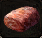

Need level 45
Knight
Warrior Trainer
Order:
- Talk to the Warrior Trainer
- Go talk to the NPC at Northen Soplar Highway
- Find a flower at Foothills of Mt. Jorito (G5)
- Kill - Great Boa x3
- Kill - Silwaspinner x3
- Go back to the Warrior Trainer
Archer
Scout Trainer
NEED |
ITEM |
QT. |
|
Durable bone |
3 |
|
Crushed Claw |
5 |
|
Acidic Ichor |
5 |
|  |
Fresh Meat |
3 |
Order:
- Talk to the Scout Trainer
- Go to Astir
- Talk to Bogen at Imperial Way (D12)
- Return to him the items
- You'll be transfered to a dungeon
- Kill 20 White and Red slugs
- Go back to the Scout Trainer
The items drop from:
- Durable Bone - Skull Pulverizer Lv32 (Nelstadt Plains)
- Crushes Claw - Wretch Lv39 (Nelstadt Plains)
- Acidic Ichor - Slugs/Ants
- Fresh Meat - Flowing Ray Lv28 (Nelstadt Plains)
Provocateur
Scout Trainer
Order:
- Talk to the Scout Trainer
- Go talk to Tolks at Astir, Imperial Way (F12)
- Go to Wulf at Royal Street (K10)
- Anwer his questions: "Visible", "Blindside", "Trapping", "Equipment set 1", "It's a job"
- Find the cave at East Soplar Highway (G10)
- Rach the end of the cave and talk to Zulo
- !!! Avoid the monsters, try not to agro them
- !!! Some mosters see you even invisible, rely on side of view
- !!! Or just brute force it by running if you has been spotted
- Return to Wulf
- Go back to the Scout Trainer